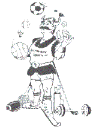

 |
Horseshoes Pre determine the number of points or the number of shoes pitched. 1. Two types of Games: a. Count-all b. Cancellation 2. Fun games = 21 pts or Tournament games = 40 pts/ shoes Note: Flip a coin or shoe to see who will pitch first. Types of Throws 1. Flip-hold the shoes between thumb and two fingers inside/out. Have it turn 1 or 2 turns. End over end. 2. 1 1/4 turn-hold so the opening is away and throw so it turns clockwise. 3. 1 3/4 turn-hold so the opening is toward and throw so it turns clockwise. |